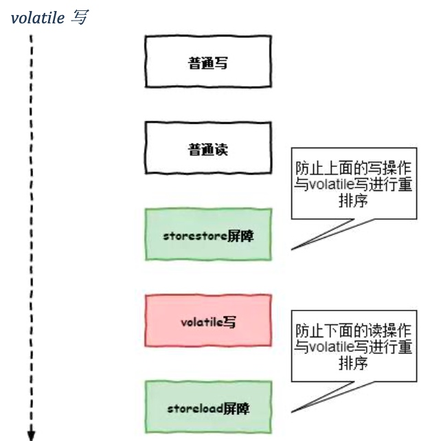
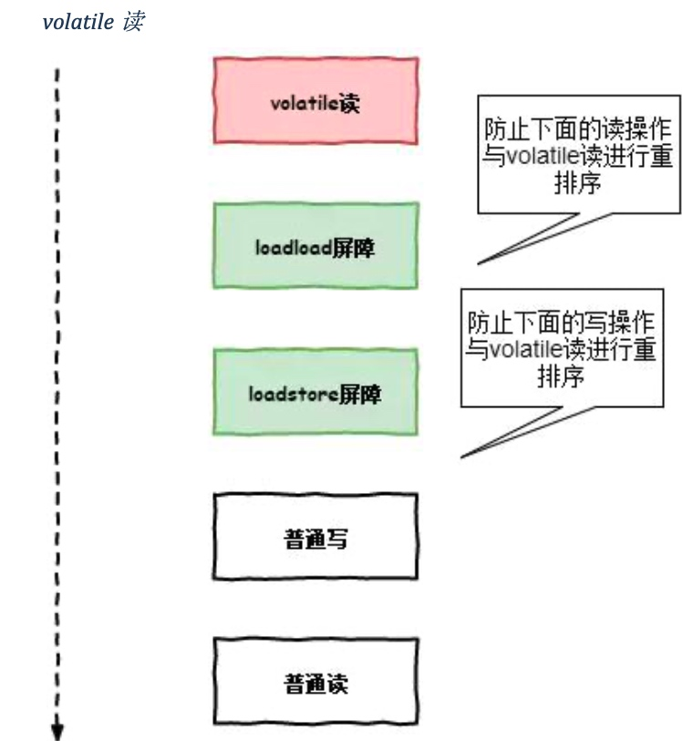

public class VolatileDemo {
private volatile static boolean ready;
private static int number = 1;
private static class PrintThread extends Thread {
public PrintThread(String name) {
super(name);
}
@Override
public void run() {
while (!ready) {
System.out.println("number: " + number++);
}
}
}
public static void main(String[] args) throws InterruptedException {
new PrintThread("volatile apply").start();
Thread.sleep(2000);
ready = true;
}
}
volatile 内存屏障
内存屏障，又称内存栅栏，是一个 CPU 指令。
在java中 对volatile 修饰的变量，编译器在生成字节码的时候，会在指令序列中插入内存屏障来禁止特定类型的处理器重排序问题，同时也保证了 volatile 变量的可见性问题
volatile 写
volatile 读
volatile 的实现原理
public class Test {
private volatile int a;
public void update() {
a = 1;
}
public static void main(String[] args) {
Test test = new Test();
test.update();
}
}
通过 jitwatch 工具得到编译后的汇编代码:
......
0x0000000002951563: and $0xffffffffffffff87,%rdi
0x0000000002951567: je 0x00000000029515f8
0x000000000295156d: test $0x7,%rdi
0x0000000002951574: jne 0x00000000029515bd
0x0000000002951576: test $0x300,%rdi
0x000000000295157d: jne 0x000000000295159c
0x000000000295157f: and $0x37f,%rax
0x0000000002951586: mov %rax,%rdi
0x0000000002951589: or %r15,%rdi
0x000000000295158c: lock cmpxchg %rdi,(%rdx) //在 volatile 修饰的共享变量进行写操作的时候会多出 lock 前缀的指令
0x0000000002951591: jne 0x0000000002951a15
0x0000000002951597: jmpq 0x00000000029515f8
0x000000000295159c: mov 0x8(%rdx),%edi
0x000000000295159f: shl $0x3,%rdi
0x00000000029515a3: mov 0xa8(%rdi),%rdi
0x00000000029515aa: or %r15,%rdi
......
volatile 关键字修饰的变量会存在一个“lock”的前缀。
Lock 前缀，Lock 不是一种内存屏障，但是它能完成类似内存屏障的功能。Lock
会对 CPU 总线和高速缓存加锁，可以理解为 CPU 指令级的一种锁。